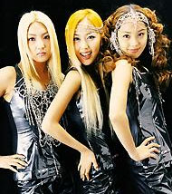

Korean Men Prefer Robust Women
by E-Dub 

Yo man, check this out.
I can't figure out why most women believe being skinny is the only resolution
for male attraction. Korean women have this infatuation of their piercing
clavicles, malnourished hips, and gaunt shaped knees to be important assets.
I just don't get it...
When I go to a club and find that a random girl has the sudden lust to
dance or freak with me (3% success rate), I become afraid. Why?
Because I have to think twice about these possible situations:
1. Am I grinding her too hard with my buttocks up against her hips?
2. And if so, is there a chance that she will plunge off the dance floor
and break her bony ass?
You see, with more voluptuous women I don't have to worry about situations
like that, because they can hold their own. You dig?
Desirably, I want my partner to manhandle me around (Mommy~!). Look,
I'm not trying to encourage that a woman should be better off being fat
than skinny. I'm here to propose that a Korean woman should focus
on a healthier image, which doesn't mean you have to look like Olive from
Popeye.
What defines my physical attraction? Take a look at track and field
or volleyball athletes because they make my one-eyed snake rise to the
occasion. Lots of gorgeous curvy women there and none of them are
anorexic. That's right, I would prefer Gabrielle Reece over Calista
Flockhart. Shoot, I'd prefer Anna Nicole Smith over Laura Flynn
Boyle (wait I'll take that back).
The bottom line is, it's being fit that makes a woman look good.
Whether you resemble a beanpole or have heavier curves than Marilyn Monroe,
you'll look your best when you've neither starved yourself into emaciation
or eaten yourself into whaledom. If you can exercise hard for 30-60
minutes a day, and come off it feeling exhilarated rather than exhausted,
chances are you'll end up looking drop dead gorgeous no matter what your
build is.
So listen up K-Town! Korean men really don't admire girls who are
sticks and bones. We prefer voluptuous, tenderloin, and curvalicious
women!